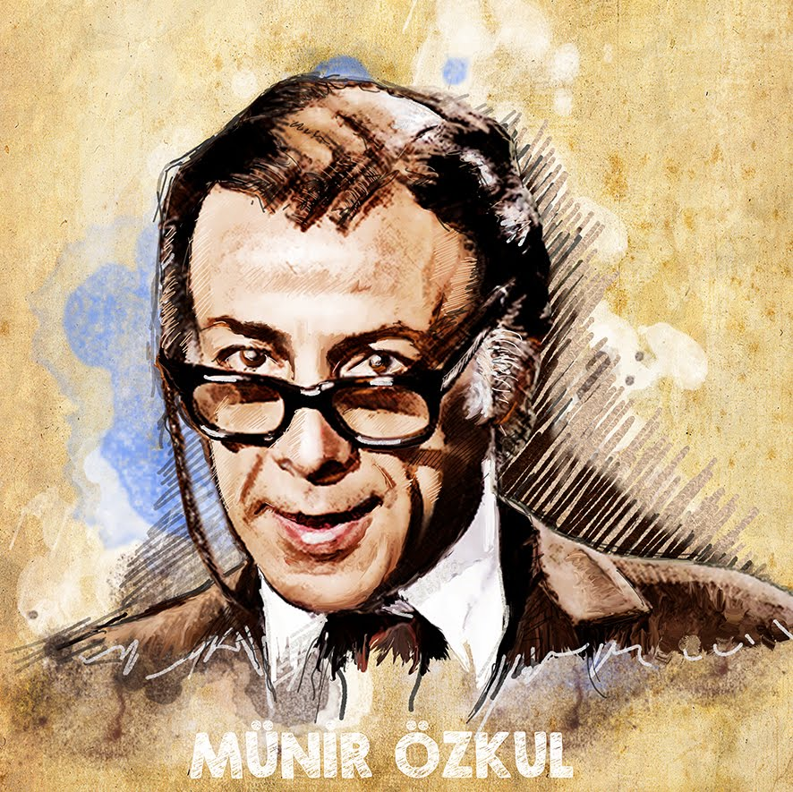

"KEL MAHMUT"
15 Ağustos 1925 tarihinde İstanbul'un Bakırköy semtinde, eski Osmanlı paşalarından birinin torunu olarak dünyaya geldi.Türk tiyatro ve sinema oyuncusu. Türk tiyatro ve sinema tarihine damgasını vurmuş önemli isimlerden biridir.1960 yılında arkadaşlarının isteği doğrultusunda Aksaray Bulvar Tiyatrosu'nu kurdu ve oyunlar sergilemeye başladı. 1962'de Bulvar Tiyatrosu, Münir Özkul Tiyatrosu adını alır.2003 yılından bu yana Demans hastalığı ile yaşayan Münir Özkul, evinden dışarıya çıkmak ve kimseyle görüşmek istemiyor. Hastalığı yüzünden geçmişe dair birçok şeyi hatırlamıyor ve ölen arkadaşlarının yaşadıklarını sanıyor. 5 Ocak 2018 yılında vefat etmiştir.